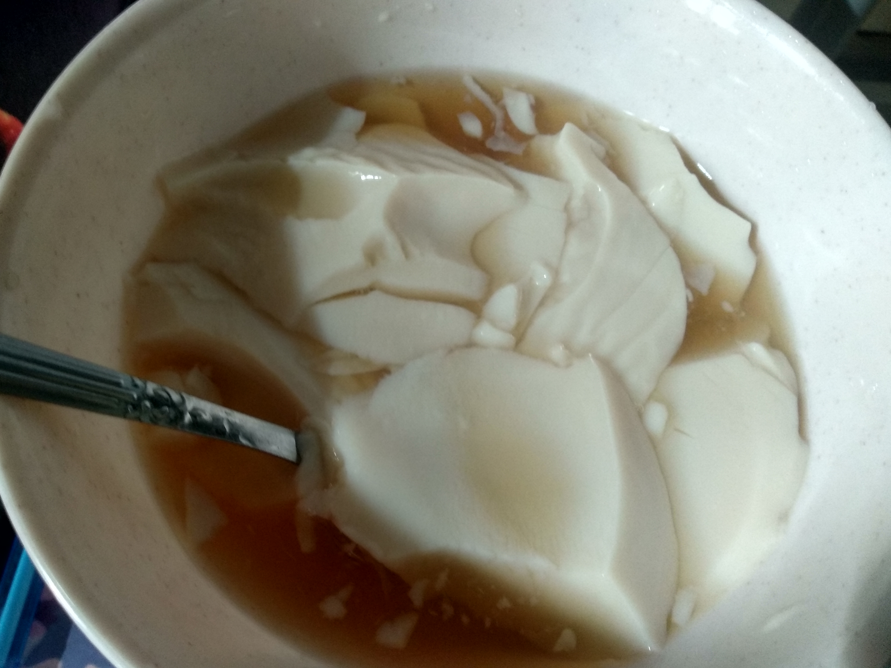

It has been 30 days since Malaysians started living under the movement control order (MCO) implemented on March 18 to curb the Covid-19 pandemic. Many things have changed. Life in the city does not seem so busy, schools and educational institutions are still closed and many are using this MCO to be with their families.
WE as a student of Unisversity Technology Mara use this MCO to study from home whcih is Online Learning Distance(OLD). For me OLD have a lot of positive impact which is it can increase our skill and knowledge. For example, i lake of knowledge about google classroom, so from this OLD i was know a lot about their function.
During OLD i also try an error some of cooking recipe. For example i was make tofu fa. i think its not bad for first trial
I also was try